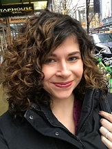

About Me

I have an AAS in Computer Systems and a BA in International Studies with a minor in French.
I am interested in many different topics. I love learning about different cultures and other languages. I worked in Refugee Resettlement for a while. Hiking and camping are also my favorite activities.
I'm married, have two rambunctious children, and we live in Lake Forest Park